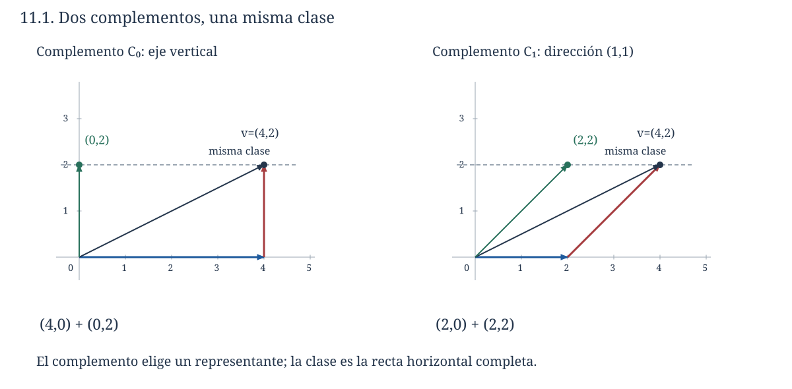
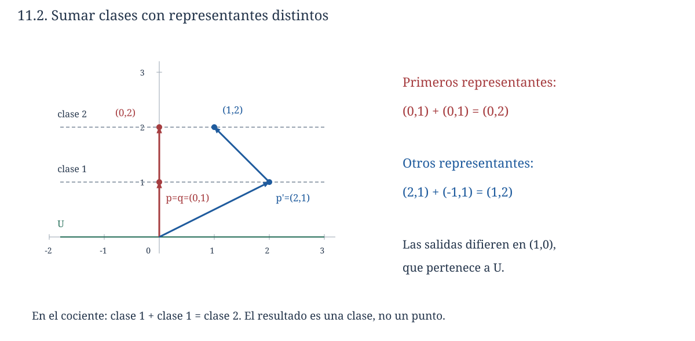
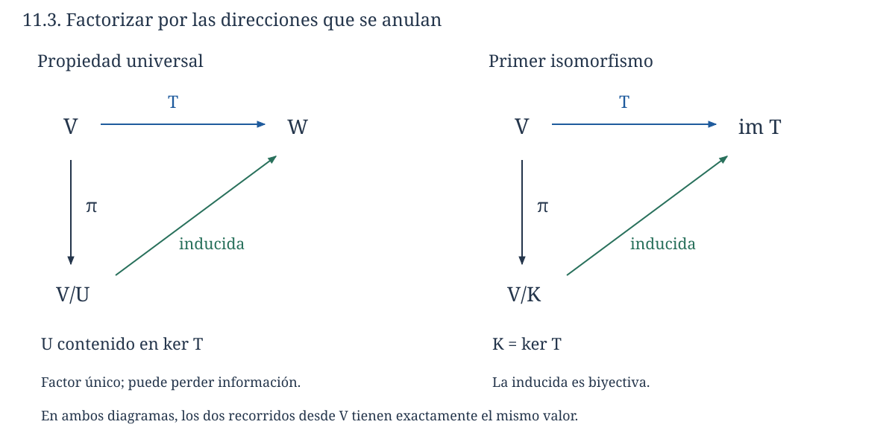

Capítulo 11. Sumas directas y espacios cociente
Álgebra para matemáticos · Tomo II
← Capítulo 10 · Índice del tomo II · Obra completa · Capítulo 12 →
Un instrumento registra sólo la segunda coordenada de una entrada \((x,y)\). Las entradas \((4,2)\), \((0,2)\) y \((-3,2)\) producen la misma lectura. La información que falta puede variar en la dirección horizontal: sumar cualquier vector de \(U=\operatorname{span}(1,0)\) deja intacta la lectura. En C09 describimos ese conjunto de entradas como una fibra, la recta \((0,2)+U\).
Podemos organizar esta situación de dos maneras. Si queremos reconstruir la entrada, separamos \((x,y)=(x,0)+(0,y)\) y conservamos ambas componentes. Si sólo importa la lectura, reunimos en un mismo objeto todas las entradas que difieren por un vector de \(U\). Ese objeto será una clase completa de entradas, no un punto elegido de la recta.
La elección de \((0,2)\) como representante es cómoda, pero no obligatoria. La recta oblicua \(C=\operatorname{span}(1,1)\) también corta cada fibra horizontal en un solo punto: la fibra de lectura dos contiene el punto \((2,2)\) de \(C\). Usarla para reconstruir cambia la descomposición a \((x,y)=(x-y,0)+(y,y)\). La clase de entradas compatibles sigue siendo la misma; la elección de una componente que la represente ha cambiado.

Las sumas directas darán condiciones para descomponer vectores de manera única. Los cocientes permitirán conservar sólo la información que permanece al ignorar un subespacio. La relación entre ambas construcciones explicará por qué podemos calcular con representantes sin convertir la elección de uno de ellos en parte de la definición.
Trabajamos sobre un mismo cuerpo \(\mathbb F\). Las transformaciones e isomorfismos son los de C08–C10. La construcción de clases retoma la equivalencia de T1 C08 y las fibras de C09; volveremos a demostrar las propiedades que necesitamos. Se indicará finitud cuando se utilicen bases finitas o dimensiones enteras. No se presupone producto interno.
11.1. Descomponer sin ambigüedad
Si \(U\) y \(W\) son subespacios de \(V\), su suma \(U+W\) está formada por los vectores \(u+w\). La existencia de esa expresión está incluida en la definición de la suma. La unicidad requiere una condición adicional: una dirección compartida por ambos subespacios puede trasladarse de una componente a la otra sin cambiar el total.
Definición 11.1 (suma directa interna). Decimos que \(U+W\) es una suma directa y escribimos \(U\oplus W\) si cada vector de la suma admite una única expresión \(u+w\), con \(u\in U\) y \(w\in W\). La afirmación \(V=U\oplus W\) exige además que \(U+W=V\).
Teorema 11.1 (criterio de suma directa). La suma \(U+W\) es directa si y sólo si \(U\cap W=\{0\}\). Para una familia finita de subespacios \(U_1,\ldots,U_m\), la expresión \(v=u_1+\cdots+u_m\) es única en su suma si y sólo si una igualdad \(u_1+\cdots+u_m=0\), con \(u_j\in U_j\), obliga a que todos los \(u_j\) sean cero.
Demostración. Si \(U\cap W=\{0\}\) y \(u+w=u'+w'\), al reagrupar obtenemos \(u-u'=w'-w\). El miembro izquierdo pertenece a \(U\) y el derecho a \(W\), por lo que su valor común debe ser cero. Así, \(u=u'\) y \(w=w'\). En sentido contrario, si \(z\in U\cap W\), el cero admite las expresiones \(0+0\) y \(z+(-z)\). La unicidad fuerza \(z=0\).
Para una familia finita, dos expresiones de un mismo vector, al restarse, producen una expresión de cero mediante las diferencias de sus componentes. Si toda expresión de cero es trivial, esas diferencias se anulan y las componentes son únicas. Recíprocamente, la unicidad aplicada al vector cero compara cualquier expresión suya con \(0+\cdots+0\) y obliga a que todas las componentes se anulen. \(\square\)
En una suma directa de varias componentes escribimos \(U_1\oplus\cdots\oplus U_m\). Para tres o más subespacios no basta que se corten por parejas sólo en cero. En \(\mathbb R^2\), las rectas \(\operatorname{span}e_1\), \(\operatorname{span}e_2\) y \(\operatorname{span}(e_1+e_2)\) tienen intersecciones por parejas nulas, pero \(e_1+e_2-(e_1+e_2)=0\) es una relación con componentes no nulas en las tres rectas. Su suma no es directa. El criterio controla una relación conjunta y no únicamente las intersecciones de dos en dos.
Si las componentes tienen bases finitas, concatenar esas bases genera la suma. En una relación nula entre sus vectores, agrupamos los términos de cada subespacio. La directitud anula cada grupo, y la independencia de la base correspondiente anula después cada coeficiente. La concatenación es, por tanto, una base y la dimensión de una suma directa finita es la suma de las dimensiones de sus componentes.
Una descomposición puede estar sugerida por la forma de los objetos. En \(P_3(\mathbb F)\), cada polinomio se separa de manera única como \((a+ct^2)+(bt+dt^3)\); los subespacios generados por \((1,t^2)\) y por \((t,t^3)\) forman una suma directa. Esta separación por exponentes funciona incluso en característica dos, pues no necesita dividir por dos ni interpretar paridad de funciones mediante \(p(-t)\).
11.2. Mantener separadas las componentes: la suma externa
Antes de sumar dos vectores podemos guardarlos en posiciones distintas de una pareja. Eso permite distinguir sus procedencias aunque los espacios originales coincidan.
Definición 11.2 (suma directa externa finita). Para espacios \(V_1,\ldots,V_m\) sobre \(\mathbb F\), su suma directa externa finita es el espacio de tuplas \(V_1\times\cdots\times V_m\), con suma y producto por escalares componente a componente. Cuando importe distinguirla de una suma interna, escribiremos \(\bigoplus_{j=1}^m{}^{\mathrm{ext}}V_j\).
Para una familia finita, este objeto coincide con el producto cartesiano provisto de las operaciones indicadas. No se está definiendo aquí una suma de una familia infinita; allí la condición de soporte finito tendría que hacerse explícita.
Proposición 11.2 (componentes externas y suma interna). Las operaciones anteriores hacen del producto finito un espacio vectorial. Si todos los \(V_j\) tienen dimensión finita, su dimensión es \(\sum_j\dim V_j\). Si \(U_j\subseteq V\), la función
\[ \sigma:U_1\times\cdots\times U_m\longrightarrow U_1+\cdots+U_m, \qquad \sigma(u_1,\ldots,u_m)=\sum_ju_j, \]
es lineal y sobreyectiva, y es un isomorfismo si y sólo si la suma interna es directa.
Demostración. Las operaciones son cerradas porque lo son en cada componente. Las identidades de asociatividad, conmutatividad y distributividad se verifican en cada posición usando las del espacio correspondiente; dos tuplas son iguales exactamente cuando lo son todas sus componentes. El cero es la tupla de ceros y el opuesto de \((v_j)\) es \((-v_j)\); la compatibilidad de dos escalares y la acción del escalar uno también se verifican posición por posición. Se cumplen así todos los axiomas.
Elegimos una base en cada componente finita e insertamos cada vector básico en su posición, con ceros en las restantes. Estas tuplas generan, pues cualquier tupla se reconstruye expandiendo cada componente. Son independientes: en una relación nula, cada posición da una relación en la base de esa componente, y todos sus coeficientes se anulan. La longitud de la base obtenida es la suma de las longitudes.
La función \(\sigma\) es lineal al distribuir las sumas y es sobreyectiva por definición de suma de subespacios. Su núcleo contiene exactamente las tuplas cuyas componentes suman cero. Por el teorema 11.1, ese núcleo es trivial exactamente cuando la suma interna es directa. C09 identifica núcleo trivial con inyectividad; junto con la sobreyectividad, esto prueba la afirmación sobre isomorfismos. \(\square\)
Por ejemplo, \(\mathbb R\times\mathbb R\) siempre conserva dos posiciones distintas. En cambio, sumar dentro de \(\mathbb R\) dos copias del propio \(\mathbb R\) mediante \((a,b)\mapsto a+b\) pierde información: \((1,-1)\) está en el núcleo. La suma externa existe sin una condición de independencia; identificarla con una suma dentro de un ambiente necesita comprobar esa condición.
En dimensión finita, la proposición y rango-nulidad dan también un criterio numérico: \(U_1+\cdots+U_m\) es directa si y sólo si su dimensión es \(\sum_j\dim U_j\). La sobreyectividad de \(\sigma\) hace que la igualdad de dimensiones equivalga a nulidad cero. Este criterio utiliza la dimensión de la suma efectiva, no la del espacio ambiente salvo que ambas coincidan.
11.3. Complementos y proyecciones
Un complemento de \(U\) en \(V\) es un subespacio \(C\) para el cual \(V=U\oplus C\). Su función es completar las direcciones de \(U\) hasta permitir reconstruir cualquier vector sin ambigüedad.
Teorema 11.3 (existencia finita de complementos). Si \(V\) tiene dimensión finita y \(U\subseteq V\) es subespacio, existe un complemento \(C\) de \(U\). Todo complemento tiene dimensión \(\dim V-\dim U\).
Demostración. Elegimos una base \((u_1,\ldots,u_k)\) de \(U\) y la extendemos por C07 a una base \((u_1,\ldots,u_k,c_1,\ldots,c_r)\) de \(V\). Sea \(C=\operatorname{span}(c_1,\ldots,c_r)\). La base completa genera, de modo que \(U+C=V\). Si un vector está en \(U\cap C\), sus dos expresiones en los bloques de la base producen, al restarse, una relación en la base completa; su independencia fuerza que todos los coeficientes sean cero. La intersección es nula y la suma es directa. Como \(\dim C=r\) y \(k+r=\dim V\), obtenemos la fórmula. Para cualquier otro complemento, concatenar bases de las dos componentes da la misma fórmula de dimensión. Los bloques vacíos incluyen \(U=\{0\}\) y \(U=V\). \(\square\)
La extensión de una base no determina un complemento único. Para el eje horizontal \(U\) de la apertura, cada \(C_a=\operatorname{span}(a,1)\), con \(a\in\mathbb R\), es un complemento, porque
\[ (x,y)=(x-ay,0)+(ay,y) \]
es una descomposición en las dos componentes y su intersección es cero. Cambiar \(a\) cambia la componente elegida y conserva el subespacio que decidimos separar.
Teorema 11.4 (proyecciones algebraicas). Si \(V=U\oplus C\), la regla \(P(u+c)=u\) define una transformación lineal con \(P^2=P\), imagen \(U\) y núcleo \(C\). Recíprocamente, si \(P:V\to V\) es lineal y \(P^2=P\), entonces \(V=\operatorname{im}P\oplus\ker P\). La transformación \(I-P\) proyecta sobre \(\ker P\) siguiendo \(\operatorname{im}P\).
Demostración. La unicidad de la descomposición hace que la regla tenga un único valor para cada entrada. Si \(v=u+c\) y \(v'=u'+c'\), entonces \(av+bv'=(au+bu')+(ac+bc')\) es la descomposición en los mismos subespacios. Por tanto, \(P(av+bv')=aP(v)+bP(v')\). La regla fija todos los vectores de \(U\) y anula los de \(C\). Esto prueba que su imagen es exactamente \(U\), que su núcleo es exactamente \(C\) y que volver a aplicar \(P\) deja el resultado fijo.
Para la recíproca, escribimos \(v=Pv+(v-Pv)\). El primer sumando está en la imagen y el segundo en el núcleo, pues \(P(v-Pv)=Pv-P^2v=0\). Si \(z\) está en ambos, \(z=Px\) para algún \(x\) y \(Pz=0\); pero \(Pz=P^2x=Px=z\), por lo que \(z=0\). La suma es directa por el teorema 11.1. En esa descomposición, \((I-P)v=v-Pv\) conserva la componente del núcleo y anula la de la imagen, lo que prueba la última afirmación. \(\square\)
El teorema no necesita finitud ni perpendicularidad. En la familia anterior, \(P_a(x,y)=(x-ay,0)\) es una proyección sobre el eje horizontal siguiendo una dirección que suele ser oblicua. Las proyecciones ortogonales se estudiarán cuando haya un producto interno; la identidad \(P^2=P\) ya tiene significado puramente algebraico.
11.4. Una clase reúne todas las entradas indistinguibles
Fijemos un subespacio \(U\subseteq V\). Diremos que \(v\) y \(w\) son equivalentes módulo \(U\) cuando \(v-w\in U\), y escribiremos \(v\sim_U w\). La diferencia expresa exactamente qué cambio entre entradas estamos ignorando. Para el eje horizontal, \((x,y)\sim_U(x',y')\) equivale a \(y=y'\).
Proposición 11.5 (clases módulo un subespacio). La relación \(\sim_U\) es de equivalencia. La clase de \(v\) es \(v+U=\{v+u:u\in U\}\). Se cumple
\[ v+U=w+U\quad\Longleftrightarrow\quad v-w\in U. \]
Dos clases son iguales o disjuntas, y cada vector pertenece a una única clase.
Demostración. Tenemos \(v-v=0\in U\), lo que prueba reflexividad. Si \(v-w\in U\), su opuesto \(w-v\) también está en \(U\), así que la relación es simétrica. Si además \(w-z\in U\), la suma \((v-w)+(w-z)=v-z\) pertenece a \(U\), lo que prueba transitividad.
Un vector \(w\) pertenece a la clase de \(v\) si \(w-v\in U\); esto equivale a escribir \(w=v+u\) con \(u\in U\). La clase es, por tanto, la traslación indicada. Si \(v-w\in U\), cualquier \(v+u\) se escribe \(w+((v-w)+u)\) y pertenece a \(w+U\); invertir los papeles prueba igualdad. Si las clases son iguales, \(v\) pertenece a \(w+U\) porque \(v=v+0\), y de ahí \(v-w\in U\).
Si dos clases comparten un punto \(z\), existen \(u,u'\in U\) con \(z=v+u=w+u'\), de modo que \(v-w=u'-u\in U\) y las clases son iguales. Cada vector pertenece a su clase, y la igualdad o disjunción impide que pertenezca a dos clases distintas. \(\square\)
Definición 11.3 (conjunto cociente y proyección). El cociente \(V/U\) es el conjunto de clases \(\{v+U:v\in V\}\). La función \(\pi_U:V\to V/U\), \(\pi_U(v)=v+U\), se llama proyección canónica o aplicación cociente. Escribiremos \([v]=v+U\) cuando el subespacio sea inequívoco.
Hay dos niveles de objetos. El vector \(v\) pertenece a \(V\); su clase \([v]\) es un elemento de \(V/U\) y, a la vez, un subconjunto de \(V\). El subespacio \(U\) entero es la clase \([0]\). Al pasar al cociente, todos sus vectores quedan reunidos en ese único elemento. Una clase distinta puede tener muchos representantes aunque, como elemento del cociente, sea un solo vector una vez que definamos las operaciones.
Para \(U=\operatorname{span}(1,0)\subseteq\mathbb R^2\), la clase de \((4,2)\) es toda la recta horizontal de altura dos, no sólo el punto \((0,2)\). Podemos nombrarla usando cualquiera de sus puntos: \((4,2)+U=(0,2)+U=(2,2)+U\). La igualdad de estas expresiones no afirma igualdad de sus representantes; afirma que todos producen el mismo conjunto.
El conjunto cociente no se obtiene quitando los puntos de \(U\). La clase cero sigue presente, y las demás clases reúnen puntos que permanecen distintos en el espacio original. Tampoco está formado por un subconjunto de puntos escogidos de antemano. La elección de representantes será una herramienta de cálculo que tendremos que controlar.

11.5. Operar con clases: el problema de los representantes
Queremos sumar las informaciones que contienen dos clases. La regla natural consiste en elegir una entrada de cada una, sumarlas y tomar la clase del resultado. Para que esa regla sea una función sobre clases, el resultado tiene que ser independiente de las entradas elegidas. La cuestión aparece antes de verificar cualquier axioma de espacio vectorial: una operación ambigua ni siquiera permitiría formular los axiomas.
Teorema 11.6 (estructura vectorial del cociente). Las reglas
\[ (v+U)+(w+U)=(v+w)+U,\qquad \lambda(v+U)=(\lambda v)+U \]
están bien definidas y hacen de \(V/U\) un espacio vectorial sobre \(\mathbb F\). Su cero es \(U\) y el opuesto de \(v+U\) es \((-v)+U\). La aplicación \(\pi_U\) es lineal y sobreyectiva, con núcleo \(U\).
Demostración. Cambiemos ambos representantes: supongamos \(v'=v+u\) y \(w'=w+u'\) con \(u,u'\in U\). Entonces
\[ (v'+w')-(v+w)=u+u'\in U. \]
Por la proposición 11.5, ambas sumas pertenecen a la misma clase. Para un escalar \(\lambda\), la diferencia \(\lambda v'-\lambda v=\lambda u\) también está en \(U\), de modo que la clase del múltiplo tampoco depende del representante. Se utilizan aquí las dos clausuras de subespacio, por suma y por escalares. Cada regla entrega una clase de un vector de \(V\), así que es cerrada en \(V/U\).
Verifiquemos los axiomas con \(\alpha=[v]\), \(\beta=[w]\) y \(\gamma=[z]\). La conmutatividad y la asociatividad se heredan mediante
\[ \alpha+\beta=[v+w]=[w+v]=\beta+\alpha, \qquad (\alpha+\beta)+\gamma=[(v+w)+z]=[v+(w+z)]=\alpha+(\beta+\gamma). \]
El elemento \([0]=U\) satisface \([v]+[0]=[v]\), y \([v]+[-v]=[0]\) da el opuesto aditivo. Para escalares \(a,b\), las cuatro identidades restantes son
\[ \begin{aligned} 1[v]&=[v],& a(b[v])&=[a(bv)]=[(ab)v]=(ab)[v],\\ a([v]+[w])&=[a(v+w)]=[av+aw]=a[v]+a[w],& (a+b)[v]&=[(a+b)v]=[av+bv]=a[v]+b[v]. \end{aligned} \]
Con ello se cumplen todos los axiomas vectoriales. La definición de las operaciones da directamente \(\pi_U(av+bw)=a\pi_U(v)+b\pi_U(w)\), así que la proyección es lineal. Toda clase tiene un representante y, por tanto, pertenece a su imagen. Finalmente, \(\pi_U(v)\) es el cero del cociente si y sólo si \(v+U=U\), lo que por la proposición 11.5 equivale a \(v\in U\). Su núcleo es exactamente \(U\). \(\square\)
En el ejemplo plano, elijamos \((0,1)\) y \((0,1)\) como representantes de dos clases de altura uno: su suma es \((0,2)\). Si elegimos en cambio \((2,1)\) y \((-1,1)\), obtenemos \((1,2)\). Los resultados en \(V\) son distintos y sus clases coinciden. La operación del cociente devuelve esa clase común; no exige que todas las sumas de representantes sean el mismo punto.
Al multiplicar una clase por cero obtenemos siempre la clase \(U\), aunque ésta contenga muchos vectores de \(V\). La operación sobre clases no debe confundirse con multiplicar un subconjunto por cero como conjunto de puntos: ese producto de conjuntos sería \(\{0\}\), mientras que el cero del espacio cociente es \(U\). La regla \(0(v+U)=(0v)+U=U\) especifica cuál operación estamos usando.
Una fórmula con representantes también puede fallar. La propuesta \(f((x,y)+U)=x\) no define una función sobre el cociente horizontal: \((0,1)\) y \((2,1)\) representan la misma clase y producirían valores cero y dos. En cambio, \(g((x,y)+U)=y\) sí está bien definida. La información conservada debe ser constante a lo largo de cada clase.
La proyección canónica tiene dominio \(V\) y codominio \(V/U\). La identidad \(P^2=P\) del teorema 11.4 correspondía a un operador de \(V\) sobre sí mismo; componer \(\pi_U\) consigo misma exigiría que sus clases fueran entradas del dominio original, lo que no forma parte de esta construcción. Si elegimos un complemento, podemos llevar cada clase a su representante en él y obtener entonces un operador de \(V\). Ese paso incorpora la elección del complemento.
11.6. Bases del cociente y representantes elegidos
La notación de las clases puede resultar menos familiar que una columna. Una base adaptada a \(U\) permite calcular en el cociente sin perder de vista qué significan sus elementos.
Teorema 11.7 (base y dimensión del cociente). Sea \((u_1,\ldots,u_k,c_1,\ldots,c_r)\) una base de \(V\) cuyo primer bloque es una base de \(U\). Entonces \((c_1+U,\ldots,c_r+U)\) es una base de \(V/U\). En particular, si \(V\) es finito,
\[ \dim(V/U)=\dim V-\dim U. \]
Demostración. Para \(v=\sum_i a_iu_i+\sum_jb_jc_j\), tomar clases anula el primer bloque porque cada \(u_i\) pertenece a \(U\). Así, \(v+U=\sum_jb_j(c_j+U)\) y las clases propuestas generan el cociente.
Si una combinación de esas clases es cero, entonces \((\sum_jb_jc_j)+U=U\). Eso significa que \(\sum_jb_jc_j\in U\), por lo que también se expresa como \(\sum_i a_iu_i\). Restar las dos expresiones produce una relación en la base completa; su independencia obliga a que todos los \(b_j\) sean cero. Las clases son independientes, y la lista es una base. Su longitud es \(r=\dim V-k\). Si \(r=0\), la lista vacía es base del cociente nulo; si \(k=0\), todas las clases son singletons y permanece toda la base. \(\square\)
También podríamos aplicar rango-nulidad a la proyección: su núcleo es \(U\) y su imagen todo \(V/U\). La prueba con una base explica además qué clases forman una base y cómo escribir sus coordenadas.
Por ejemplo, sea \(V=P_3(\mathbb F)\) y \(U=\operatorname{span}(1,t)\). La clase de \(a+bt+ct^2+dt^3\) depende sólo de \(c,d\). Las clases \(t^2+U,t^3+U\) forman una base y la clase tiene columna \((c,d)^{\mathsf T}\) en ella. El representante \(ct^2+dt^3\) es el que pertenece al complemento \(\operatorname{span}(t^2,t^3)\). Elegir otro complemento cambiaría ese representante, sin alterar la clase ni el espacio cociente.
Proposición 11.8 (un complemento representa el cociente). Un subespacio \(C\subseteq V\) es complemento de \(U\) si y sólo si la restricción \(\pi_U|_C:C\to V/U\) es un isomorfismo.
Demostración. Si \(V=U\oplus C\), cada \(v=u+c\) satisface \(v+U=c+U\), por lo que la restricción alcanza todas las clases. Si dos vectores \(c,c'\in C\) producen la misma clase, su diferencia pertenece a \(U\cap C=\{0\}\), luego coinciden. La restricción es lineal por serlo \(\pi_U\), y por tanto es un isomorfismo.
Recíprocamente, si la restricción es sobreyectiva, para cada \(v\) hay \(c\in C\) con \(v+U=c+U\); entonces \(v-c\in U\) y \(V=U+C\). Su inyectividad implica que el único \(c\in C\) con clase cero es cero, de modo que \(U\cap C=\{0\}\). La suma es directa. \(\square\)
El cociente está definido a partir de \(V\) y \(U\) sin escoger \(C\). El isomorfismo hacia un complemento concreto utiliza la elección de ese complemento. En el plano, la clase de altura \(y\) se representa por \((ay,y)\) en \(C_a\), y esa representación varía con \(a\). En general, \(V/U\) es un espacio de clases; un complemento permite realizarlo mediante vectores de \(V\), pero no lo convierte en ese subconjunto por definición.
11.7. Qué transformaciones pueden calcularse desde una clase
Supongamos que queremos aplicar \(T:V\to W\) a una entrada conocida sólo módulo \(U\). Conocer su clase significa que podemos reemplazar \(v\) por \(v+u\) con \(u\in U\). La linealidad da \(T(v+u)=T(v)+T(u)\), por lo que el resultado será independiente del reemplazo exactamente cuando \(T\) anule todas las direcciones de \(U\).
Teorema 11.9 (propiedad universal del cociente). Para una transformación lineal \(T:V\to W\), existe una transformación lineal \(\overline T:V/U\to W\) con \(T=\overline T\pi_U\) si y sólo si \(U\subseteq\ker T\). Cuando existe, es única y está dada por \(\overline T(v+U)=T(v)\).
Demostración. Si la factorización existe y \(u\in U\), entonces \(\pi_U(u)=0_{V/U}\), de modo que \(T(u)=\overline T(0_{V/U})=0_W\). Así, \(U\subseteq\ker T\) es necesario.
Supongamos esa inclusión. Proponemos la fórmula del enunciado, pero debemos comprobarla sobre cualquier representante: si \(v+U=v'+U\), tenemos \(v-v'\in U\subseteq\ker T\), luego \(T(v)-T(v')=T(v-v')=0\). La fórmula tiene un valor único en cada clase. Para escalares \(a,b\), las operaciones del cociente y la linealidad de \(T\) dan
\[ \overline T\bigl(a(v+U)+b(w+U)\bigr) =T(av+bw)=aT(v)+bT(w). \]
Por tanto, \(\overline T\) es lineal y satisface \(\overline T\pi_U(v)=T(v)\) para toda entrada. Cualquier función que satisfaga esa igualdad debe tomar el valor \(T(v)\) en la clase \(v+U\); como todas las clases tienen representante, no queda ningún valor libre y la función es única. \(\square\)
La palabra «universal» resume una condición que permite reconocer todas las transformaciones que pasan por el cociente. La demostración proporciona una prueba práctica de buena definición: variar el representante produce una diferencia en \(U\), que la transformación debe anular.
Para el eje horizontal, \(T(x,y)=3y\) anula \(U\) y define \(\overline T((x,y)+U)=3y\). La función \(S(x,y)=x+y\) no lo anula, porque \(S(1,0)=1\), y no puede evaluarse conociendo sólo la clase horizontal. En la familia de complementos, elegir un representante permitiría aplicar \(S\) a ese punto, pero el valor dependería del complemento elegido; no sería una factorización de la función original \(S\) a través de todas sus entradas.

11.8. Reunir exactamente las entradas con la misma salida
En C09 probamos que \(T(v)=T(w)\) equivale a \(v-w\in\ker T\). Por tanto, las fibras no vacías de \(T\) son precisamente las clases módulo su núcleo. El cociente por el núcleo convierte cada fibra completa en una entrada y elimina así las coincidencias entre entradas distintas.
Teorema 11.10 (primer teorema de isomorfismo). Si \(T:V\to W\) es lineal, la regla
\[ \widetilde T:V/\ker T\longrightarrow\operatorname{im}T, \qquad \widetilde T(v+\ker T)=T(v), \]
es un isomorfismo. No se requiere dimensión finita.
Demostración. La propiedad universal con \(U=\ker T\) proporciona una aplicación bien definida y lineal. Sus valores pertenecen a \(\operatorname{im}T\), y cada elemento de esa imagen es \(T(v)\) para alguna entrada, por lo que la regla es sobreyectiva hacia el codominio indicado. Si \(\widetilde T(v+\ker T)=0\), entonces \(T(v)=0\) y \(v\in\ker T\); su clase es, por tanto, la clase cero. El núcleo de \(\widetilde T\) es trivial y C09 da inyectividad. Esto prueba el isomorfismo. \(\square\)
La imagen, y no necesariamente el codominio original, es el destino donde obtenemos sobreyectividad. Para \(T:\mathbb R^3\to\mathbb R^3\), \(T(x,y,z)=(x+y,z,x+y+z)\), el núcleo es \(\operatorname{span}(1,-1,0)\) y la imagen es el plano \(\{(a,b,c):c=a+b\}\). El cociente bidimensional se identifica con ese plano mediante la regla del teorema, no con todo \(\mathbb R^3\).
Si conocemos la salida \((a,b,a+b)\), una clase que le corresponde es \((a,0,b)+\ker T\); todos sus representantes producen la misma salida. Escoger el representante con segunda coordenada cero proporciona una función inversa escrita con un complemento concreto. La clase inversa está determinada por \(T\) sin esa elección: es la fibra completa de la salida.
Para la derivación \(D:P_3(\mathbb R)\to P_2(\mathbb R)\), el núcleo son las constantes y la imagen todo \(P_2\). El isomorfismo inducido asocia a cada polinomio, módulo constantes, su derivada. La inversa lleva \(a+bt+ct^2\) a la clase de \(at+(b/2)t^2+(c/3)t^3\). Añadir una constante no cambia esa clase. Las divisiones y la identificación del núcleo se apoyan en el cuerpo real; en característica positiva hay que recalcularlas como en C09.
11.9. Subespacios que sobreviven al paso al cociente
Si un subespacio contiene \(U\), reúne clases completas: junto con un vector \(v\) contiene todos los \(v+u\). Esto permite organizar los subespacios del cociente mediante subespacios del espacio original.
Proposición 11.11 (correspondencia de subespacios). Los subespacios de \(V/U\) están en correspondencia biyectiva, preservando inclusiones, con los subespacios \(H\) de \(V\) que contienen \(U\). Las reglas son \(H\mapsto\pi_U(H)=H/U\) y \(Y\mapsto\pi_U^{-1}(Y)\). Si \(V\) es finito, \(\dim(H/U)=\dim H-\dim U\).
Demostración. La imagen de un subespacio bajo una aplicación lineal es subespacio. La preimagen de un subespacio también lo es: contiene cero, y si dos vectores tienen imágenes en \(Y\), cualquier combinación lineal tiene imagen en \(Y\). Además, la preimagen contiene \(U\) porque todos sus vectores tienen imagen cero.
Si \(H\) contiene \(U\), entonces \(\pi_U^{-1}(\pi_U(H))=H\). Una inclusión es inmediata; para la otra, si \(v+U=h+U\) con \(h\in H\), entonces \(v-h\in U\subseteq H\) y \(v\in H\). Por otro lado, \(\pi_U(\pi_U^{-1}(Y))=Y\) porque \(\pi_U\) es sobreyectiva: cada clase de \(Y\) tiene un representante cuya imagen vuelve a ser esa clase. Las reglas son inversas. Imágenes y preimágenes preservan las inclusiones pertinentes, y la fórmula de dimensión es el teorema 11.7 aplicado a \(H\) y su subespacio \(U\). \(\square\)
La condición de contener \(U\) no puede suprimirse de esa correspondencia. En el plano de la apertura, todos los complementos \(C_a\) tienen imagen igual a todo \(V/U\), aunque sean rectas distintas. Al tomar la preimagen de esa imagen obtenemos \(V\), no la recta elegida. Para un subespacio arbitrario \(C\), lo que reaparece tras proyectar y tomar preimagen es \(C+U\).
11.10. Ejercicios
Los espacios son reales salvo indicación contraria. Distinga siempre un representante, su clase y una coordenada de esa clase en una base elegida. Las pruebas deben comprobar buena definición cuando propongan reglas sobre clases.
Descomponer y calcular clases
1. Descomponga \((4,2)\) según el eje horizontal y, respectivamente, el eje vertical o la recta \(\operatorname{span}(1,1)\). Compruebe unicidad en cada caso.
2. En \(\mathbb R^3\), tome \(U=\{z=0\}\) y \(C=\operatorname{span}(1,1,1)\). Pruebe \(\mathbb R^3=U\oplus C\) y descomponga \((2,-1,3)\).
3. Separe \(2-3t+5t^2+t^3\) en sus componentes en \(\operatorname{span}(1,t^2)\) y \(\operatorname{span}(t,t^3)\). Indique por qué funciona sobre cualquier cuerpo al interpretar los coeficientes en él.
4. Para \(P_a(x,y)=(x-ay,0)\), determine imagen, núcleo, cuadrado y la proyección complementaria. Calcule ambas componentes de \((4,2)\) para \(a=2\).
5. Para \(U=\operatorname{span}(1,0)\subseteq\mathbb R^2\), describa las clases de \((4,2)\) y \((-1,2)\), su suma como elementos del cociente, su opuesto y el producto de una de ellas por cero.
6. En \(\mathbb R^3/U\), con \(U=\operatorname{span}(1,1,0)\), decida si \((2,3,4)\) y \((-1,0,4)\) representan la misma clase. Halle un representante único con primera coordenada cero y una base del cociente.
7. En \(P_3(\mathbb R)/\operatorname{span}(1,t)\), halle las coordenadas de la clase de \(2-3t+5t^2+t^3\) en la base de clases de \(t^2,t^3\). Describa todos sus representantes.
8. En \(\mathbb F_2^2\), sea \(U=\operatorname{span}(1,1)\). Enumere todas las clases y su tabla de suma. Dé una base del cociente.
9. Construya una base de la suma externa \(P_1(\mathbb R)\times\mathbb R^2\) y exprese \((2-3t,(4,1))\) mediante ella.
10. Para \(T(x,y,z)=(x+y,z)\), describa el isomorfismo del primer teorema y la clase que corresponde a \((2,3)\). Distinga esa clase de una solución particular.
Reconstruir pruebas y diagnosticar errores
11. Pruebe que \(U+W\) es directa si y sólo si la única expresión de cero como \(u+w\) es \(0+0\). Relacione el criterio con la intersección.
12. Construya tres rectas con intersecciones nulas por parejas cuya suma no sea directa. Identifique una relación conjunta no trivial.
13. Demuestre que \(v+U\) es un subespacio de \(V\) si y sólo si \(v\in U\). ¿Cuántas clases son subespacios de \(V\)?
14. Reconstruya el control de buena definición de la suma y del producto por escalares en \(V/U\). Señale exactamente qué propiedades de \(U\) intervienen.
15. Refute la propuesta \(f((x,y)+U)=x\) para el cociente horizontal. Encuentre una regla lineal no nula de ese cociente hacia \(\mathbb R\) que sí esté bien definida.
16. Describa \(V/\{0\}\) y \(V/V\), sus ceros y las proyecciones respectivas. Construya el isomorfismo natural entre el primero y \(V\).
17. Pruebe que una proyección lineal idempotente descompone \(V\) en imagen y núcleo sin suponer dimensión finita. Halle imagen y núcleo de \(I-P\).
18. En la prueba de la base del cociente, explique por qué una combinación de representantes perteneciente a \(U\) produce una relación en la base completa. ¿Bastaría comprobar que sus clases generan?
19. Pruebe las dos direcciones de la propiedad universal y la unicidad de la aplicación inducida. Distinga dónde se usa linealidad y dónde sobreyectividad de la proyección.
20. Para \(T(x,y,z)=(x+y,z,x+y+z)\), un argumento afirma que \(\mathbb R^3/\ker T\) es isomorfo a todo el codominio \(\mathbb R^3\) mediante la regla inducida. Diagnostique y corrija la afirmación.
Construir complementos y aplicaciones inducidas
21. Cada clase horizontal contiene exactamente un punto de \(G=\{(y^2,y):y\in\mathbb R\}\). ¿Es \(G\) un complemento vectorial del eje horizontal? Examine la linealidad de la selección de ese representante.
22. Clasifique todos los complementos del eje horizontal en \(\mathbb R^2\) y las proyecciones sobre ese eje. Muestre por qué no hay un complemento elegido sólo por la definición de suma directa.
23. En \(M_2(\mathbb F)\), sea \(U\) el subespacio de matrices diagonales. Construya un complemento, una base del cociente y un isomorfismo explícito del cociente hacia \(\mathbb F^2\).
24. Pruebe que toda matriz cuadrada se descompone de manera única como suma de una simétrica y una antisimétrica si la característica no es dos. Explique qué falla en característica dos con un ejemplo de orden dos.
25. Sea \(U=\operatorname{span}(1,1,1)\subseteq\mathbb R^3\). Determine cuáles de las reglas \(f([(x,y,z)])=x-y\), \(g([(x,y,z)])=x+y+z\) están bien definidas. Construya un isomorfismo del cociente hacia \(\mathbb R^2\).
26. Para \(E:P_3(\mathbb R)\to\mathbb R^2\), \(E(p)=(p(0),p(1))\), determine núcleo y describa el isomorfismo inducido, su inversa en términos de clases y un complemento del núcleo.
27. Para la derivación en \(P_3(\mathbb F_2)\), determine el núcleo y la imagen, una base del cociente por el núcleo y el isomorfismo inducido. No utilice integración con división por enteros nulos.
28. Sea \(T(x,y,z)=(x,z)\) y \(U=\operatorname{span}(0,1,0)\). Factorice \(T\) por \(V/U\). Repita la pregunta con \(U'=\operatorname{span}(1,0,0)\) y explique la diferencia.
29. Para subespacios \(C,U\subseteq V\), pruebe \(\pi_U^{-1}(\pi_U(C))=C+U\). Deduzca la condición exacta para recuperar \(C\) con ambas operaciones.
30. En \(\mathbb R^3\), tome \(U=\operatorname{span}e_1\) y \(H=\operatorname{span}(e_1,e_2+e_3)\). Dé una base de \(H/U\) y calcule su preimagen por la proyección. Describa una clase no nula de ese subespacio del cociente.
Integrar y transferir
31. Si \(U\subseteq\ker T\), pruebe que la aplicación inducida \(\overline T:V/U\to W\) es inyectiva si y sólo si \(U=\ker T\), y que es sobreyectiva si y sólo si \(T\) lo es.
32. Para subespacios \(A,B\subseteq V\), construya y pruebe el isomorfismo \(A/(A\cap B)\cong(A+B)/B\) mediante una regla sobre clases. No suponga dimensión finita.
33. Si \(U\subseteq H\subseteq V\), construya el isomorfismo \((V/U)/(H/U)\cong V/H\). Verifique buena definición y describa el núcleo de la aplicación intermedia \(V/U\to V/H\).
34. Sea \(V\) finito y \(T:V\to W\) sobreyectiva. Construya una función lineal \(s:W\to V\) con \(Ts=I_W\) usando un complemento de \(\ker T\). Pruebe que toda función lineal con esa propiedad determina un complemento mediante su imagen.
35. Suponga \(V=U\oplus C\). Para una aplicación lineal \(L:C\to U\), pruebe que \(G_L=\{L(c)+c:c\in C\}\) es un complemento de \(U\). Demuestre que todo complemento de \(U\) se obtiene así de una única \(L\).
36. Si \(V\) tiene dimensión \(n\) sobre \(\mathbb F_q\) y \(U\) dimensión \(k\), cuente las clases de \(V/U\), los representantes de cada clase y los complementos de \(U\). Justifique la fórmula para complementos usando el ejercicio 35.
37. Para \(T:V\to W\) lineal, muestre que su gráfica \(\Gamma_T=\{(v,Tv):v\in V\}\) es un subespacio de \(V\times W\) y un complemento de \(\{0\}\times W\). Determine una descomposición explícita de \((v,w)\).
38. En \(\mathbb F[t]\), sea \(U\) el subespacio de polinomios con término constante cero. Pruebe que el cociente es isomorfo a \(\mathbb F\), aunque el dominio y \(U\) sean infinitos. Explique por qué no debe escribirse la resta de dimensiones como una resta de enteros infinitos.
39. Muestre que enviar \(S:V/U\to W\) a \(S\pi_U\) establece un isomorfismo entre \(\operatorname{Hom}(V/U,W)\) y \(\{T\in\operatorname{Hom}(V,W):U\subseteq\ker T\}\). Si \(V,W\) son finitos, calcule la dimensión de este último espacio.
40. Un procedimiento dice «quitar \(U\) de \(V\) y elegir un punto de cada recta restante produce el cociente como subespacio». Refútelo con el ejemplo horizontal; reconstruya el cociente correcto y precise qué condición adicional sobre un conjunto de representantes lo convierte en un complemento lineal.
11.11. Soluciones razonadas
1. Con el eje vertical, \((4,2)=(4,0)+(0,2)\); con la recta oblicua, \((4,2)=(2,0)+(2,2)\). En el primer caso la primera coordenada determina la componente horizontal y la segunda la vertical. En el segundo, una componente oblicua \((a,a)\) debe tener \(a=2\) para aportar la segunda coordenada, y la horizontal restante es \((2,0)\). Las intersecciones de los dos pares de subespacios son cero y cada par genera el plano, lo que confirma unicidad por el criterio general.
2. La identidad \((x,y,z)=(x-z,y-z,0)+z(1,1,1)\) prueba generación. Una componente de la recta que pertenezca al plano tiene tercera coordenada cero, de modo que su escalar es cero; la intersección es nula y la suma directa. Para \((2,-1,3)\) obtenemos \((-1,-4,0)+(3,3,3)\). La tercera coordenada determina el escalar de la recta, lo que también muestra directamente la unicidad.
3. Las componentes son \(2+5t^2\) y \(-3t+t^3\). Si una suma de un polinomio con sólo exponentes pares y otro con sólo exponentes impares es cero, todos los coeficientes deben anularse por unicidad de coeficientes formales. Por eso la separación es única sobre cualquier cuerpo; se interpretan \(2,-3,5\) en ese cuerpo, y alguno puede convertirse en cero sin afectar el argumento por posiciones de exponentes.
4. La imagen es el eje horizontal porque \(P_a(x,0)=(x,0)\) y toda salida tiene segunda coordenada cero. El núcleo exige \(x=ay\), luego es \(C_a=\operatorname{span}(a,1)\). Aplicar \(P_a\) a \((x-ay,0)\) devuelve el mismo vector, así que \(P_a^2=P_a\). La complementaria es \((I-P_a)(x,y)=(ay,y)\). Para \(a=2\), \(P_2(4,2)=(0,0)\) y \((I-P_2)(4,2)=(4,2)\), coherente con que la entrada pertenece a \(C_2\).
5. Ambas clases son la recta \(\{(s,2):s\in\mathbb R\}\) porque la diferencia de los representantes es horizontal. Su suma es la clase de \((3,4)\), es decir, toda la recta de altura cuatro; se obtendría la misma clase sumando otros representantes. El opuesto de cualquiera es la recta de altura menos dos. Multiplicar por cero en el cociente devuelve \(U\), la clase cero. Esa clase es un elemento del cociente aunque, como subconjunto del plano, contenga infinitos puntos.
6. La diferencia es \((3,3,0)=3(1,1,0)\), por lo que las clases coinciden. Restar \(x(1,1,0)\) de \((x,y,z)\) da el representante \((0,y-x,z)\); es único porque dos representantes con primera entrada cero sólo pueden diferir en un múltiplo de \((1,1,0)\) si ese múltiplo es cero. En el caso dado, el representante es \((0,1,4)\). Las clases de \(e_2,e_3\) forman una base del cociente, pues \(((1,1,0),e_2,e_3)\) es una base adaptada del dominio.
7. La columna es \((5,1)^{\mathsf T}\). Todos los representantes son \(5t^2+t^3+a+bt\), con \(a,b\in\mathbb R\) arbitrarios. El polinomio original corresponde a \(a=2\), \(b=-3\). Añadir elementos de \(U\) cambia exactamente los coeficientes que desaparecen al tomar clases; ninguna elección de ellos modifica los dos coeficientes de la columna del cociente.
8. La clase cero es \(A=\{(0,0),(1,1)\}\) y la otra es \(B=\{(1,0),(0,1)\}\). Sus sumas son \(A+A=A\), \(A+B=B+A=B\) y \(B+B=A\), como se comprueba sumando representantes y tomando la clase. Los múltiplos por cero y uno son los impuestos por el cuerpo. La lista de un vector \((B)\) es base, ya que su único múltiplo no nulo es \(B\) y alcanza la única clase no nula. El cociente tiene dimensión uno y dos elementos, no cuatro clases.
9. Una base es \(((1,(0,0)),(t,(0,0)),(0,(1,0)),(0,(0,1)))\). La tupla pedida se expresa con coeficientes \((2,-3,4,1)\) en ese orden. La expansión existe por las bases de cada posición y es única porque una relación nula obliga por separado a anular los coeficientes del polinomio y los de la pareja real. La dimensión de la suma externa es \(2+2=4\).
10. El núcleo es \(K=\operatorname{span}(1,-1,0)\), pues anular la salida exige \(x+y=0\), \(z=0\). Toda salida \((a,b)\) se alcanza desde \((a,0,b)\). El isomorfismo es \([(x,y,z)]\mapsto(x+y,z)\) desde \(\mathbb R^3/K\) hacia \(\mathbb R^2\); diferencias en \(K\) no cambian la salida y una clase que produce cero es precisamente \(K\). La inversa de \((2,3)\) es la clase \((2,0,3)+K\), con representantes \((2+s,-s,3)\). El punto \((2,0,3)\) es una solución particular, mientras que la clase contiene todas las soluciones.
11. Si sólo la expresión trivial representa cero, dos descomposiciones iguales producen al restarse una expresión de cero y sus componentes deben coincidir. Si la expresión es única para todos los vectores, lo es para cero y debe ser la trivial. Además, cualquier \(z\in U\cap W\) daría \(z+(-z)=0\), lo que fuerza \(z=0\). Recíprocamente, una igualdad \(u+w=0\) da \(u=-w\in U\cap W\); si la intersección es nula, ambas componentes son cero. Los tres criterios son equivalentes.
12. Tome las rectas generadas por \(e_1,e_2,e_1+e_2\) en \(\mathbb R^2\). Dos de ellas tienen direcciones no proporcionales y sólo comparten cero. Sin embargo, \(e_1+e_2+(-e_1-e_2)=0\) es una relación con una componente no nula en cada recta. El vector cero tiene así una representación no trivial y la suma no es directa. La tercera recta ya está contenida en la suma de las dos primeras, lo que localiza la dependencia que las intersecciones por parejas no detectan.
13. Si \(v+U\) es subespacio, contiene cero; por tanto \(0=v+u\) para algún \(u\in U\), y \(v=-u\in U\). Si \(v\in U\), la proposición 11.5 da \(v+U=U\), que sí es subespacio. Sólo una clase, la clase cero, es un subespacio del ambiente. Las demás son traslaciones afines de \(U\) y no contienen el cero del ambiente.
14. Si \(v'=v+u\) y \(w'=w+u'\) con \(u,u'\in U\), entonces \((v'+w')-(v+w)=u+u'\in U\). La clausura por suma garantiza que la clase del resultado no cambia. Para el producto por \(a\), \(av'-av=au\in U\) utiliza clausura por escalares. El cero y los opuestos de \(U\) permiten interpretar la igualdad de clases y las diferencias, ya justificadas en la relación de equivalencia. Estas comprobaciones se hacen antes de usar los axiomas del cociente, para que las operaciones tengan un valor determinado.
15. Los representantes \((0,1)\) y \((2,1)\) tienen la misma clase horizontal y la regla propuesta entrega cero y dos. No es una función bien definida. En cambio, \(g((x,y)+U)=y\) está bien definida porque una diferencia horizontal obliga a igualdad de segundas coordenadas. La regla es lineal por las operaciones del cociente y no nula porque la clase de \((0,1)\) se envía a uno. También sería válido cualquier múltiplo escalar no nulo de esa lectura.
16. En \(V/\{0\}\) cada clase es el singleton \(\{v\}\); el cero es \(\{0\}\) y la proyección envía \(v\) a ese singleton. La regla \(\{v\}\mapsto v\) está bien definida por unicidad del elemento y es lineal, biyectiva e inversa de la proyección. En \(V/V\) hay una sola clase, todo \(V\); ése es su cero y la proyección es la función cero hacia el espacio de un elemento. Ambas descripciones incluyen el caso \(V=\{0\}\).
17. Para todo \(v\), la igualdad \(v=Pv+(v-Pv)\) separa un elemento de la imagen y uno del núcleo porque \(P(v-Pv)=0\). Si \(z=Pu\) y \(Pz=0\), la idempotencia da \(z=P^2u=Pz=0\), de modo que la intersección es nula. No se utilizaron bases ni dimensiones. Además, \((I-P)v\) siempre está en \(\ker P\) y cada \(u\in\ker P\) se fija por \(I-P\), luego su imagen es \(\ker P\). La igualdad \((I-P)v=0\) equivale a \(v=Pv\), es decir, a pertenecer a \(\operatorname{im}P\), que es su núcleo.
18. Una relación nula de clases significa \((\sum_jb_jc_j)+U=U\), de donde \(\sum_jb_jc_j\in U\). Ese vector tiene también una expresión \(\sum_ia_iu_i\) en la base de \(U\). La diferencia entre ambas expresiones es una relación en la base completa \((u_i,c_j)\), cuya independencia fuerza todos los \(b_j\) a cero. La generación por sí sola sólo daría una lista posiblemente redundante y una cota superior para la dimensión; faltaría la independencia que asegura que las clases forman una base.
19. Si \(T=S\pi_U\) con \(S\) lineal, todo \(u\in U\) tiene imagen \(T(u)=S(0)=0\), así que la inclusión en el núcleo es necesaria. Si \(U\subseteq\ker T\), la diferencia de dos representantes de una clase se anula bajo \(T\), lo que permite definir \(S(v+U)=T(v)\) sin ambigüedad. La linealidad de \(T\) y las operaciones sobre clases prueban la linealidad de \(S\). La igualdad \(S\pi_U=T\) se verifica en cada vector. Finalmente, la sobreyectividad de \(\pi_U\) obliga a cualquier factor a tomar esos valores en todas las clases; prueba unicidad sin requerir una base ni dimensión finita.
20. Todas las salidas satisfacen \(c=a+b\), de modo que la regla inducida no alcanza, por ejemplo, \((0,0,1)\). El núcleo tiene dimensión uno y el cociente dimensión dos; tampoco podría ser isomorfo a un espacio tridimensional. La afirmación correcta es \(\mathbb R^3/\operatorname{span}(1,-1,0)\cong\{(a,b,a+b):a,b\in\mathbb R\}\) mediante \([(x,y,z)]\mapsto(x+y,z,x+y+z)\). Es lineal, bien definida e inyectiva y alcanza precisamente ese plano.
21. La altura \(y\) determina exactamente un punto de \(G\), así que sí hay una selección única por clase. Pero \(G\) no es subespacio: \((1,1)\) está en \(G\) y su doble \((2,2)\) no está, pues el punto de altura dos de \(G\) es \((4,2)\). La selección \(s\) tampoco es lineal: \(s(2[(0,1)])=(4,2)\) y \(2s([(0,1)])=(2,2)\). Tener un representante por clase no basta para obtener un complemento vectorial; además, el conjunto elegido debe ser subespacio, o equivalentemente la selección debe ser lineal.
22. Un complemento debe tener dimensión uno y contener un vector \((r,s)\) con \(s\ne0\), pues de otro modo sería el eje horizontal. Normalizando ese vector obtenemos \((a,1)\) con \(a=r/s\), y el complemento es \(C_a=\operatorname{span}(a,1)\). La descomposición de cualquier \((x,y)\) es \((x-ay,0)+(ay,y)\), por lo que la proyección sobre el eje es \(P_a(x,y)=(x-ay,0)\). El parámetro \(a\) determina la recta de manera única y valores distintos dan complementos distintos. La definición no selecciona un valor de \(a\); una elección preferida necesitaría datos adicionales.
23. El complemento puede ser \(C=\operatorname{span}(E_{12},E_{21})\), las matrices de diagonal cero. Toda matriz se separa de manera única en su diagonal y su parte fuera de diagonal, verificándolo entrada por entrada. Las clases \(E_{12}+U,E_{21}+U\) forman una base del cociente. La regla \(\begin{pmatrix}a&b\\c&d\end{pmatrix}+U\mapsto(b,c)\) está bien definida porque sumar una diagonal no cambia esas entradas. Es lineal, alcanza cualquier pareja y sólo se anula en la clase de las diagonales; es un isomorfismo hacia \(\mathbb F^2\) sobre cualquier cuerpo.
24. Si \(2\ne0\) en el cuerpo, escribimos \(A=(A+A^{\mathsf T})/2+(A-A^{\mathsf T})/2\). La primera parte es simétrica y la segunda antisimétrica al transponerlas. Una matriz en ambos subespacios cumple \(M=M^{\mathsf T}=-M\), de donde \(2M=0\) y \(M=0\), así que la descomposición es única. En característica dos, \(-M=M\), de modo que simetría y antisimetría definidas por \(M^{\mathsf T}=-M\) coinciden. Su intersección contiene matrices no nulas, como \(E_{11}\), y su suma no contiene \(E_{12}\) en orden dos porque ésta no es simétrica. No hay la suma directa anunciada ni puede utilizarse división por dos.
25. Sumar \((a,a,a)\) deja \(x-y\) fijo, así que \(f\) está bien definida; en cambio, la suma de coordenadas aumenta en \(3a\), y \(g\) falla sobre \(\mathbb R\). Un isomorfismo es \(F([(x,y,z)])=(y-x,z-x)\). Es constante sobre las clases y lineal. Cualquier pareja \((r,s)\) se alcanza con \((0,r,s)\); si la pareja es cero, \(x=y=z\) y el representante pertenece a \(U\), de modo que su clase es cero. Su inversa envía \((r,s)\) a \((0,r,s)+U\). La condición de cuerpo real importa para la refutación de \(g\).
26. Escribir \(p=a+bt+ct^2+dt^3\) da \(E(p)=(a,a+b+c+d)\). El núcleo exige \(a=0\), \(b=-c-d\), por lo que tiene base \((t^2-t,t^3-t)\) y dimensión dos. Toda pareja \((u,v)\) se alcanza con \(u+(v-u)t\), así que la imagen es \(\mathbb R^2\). El isomorfismo inducido lleva \(p+\ker E\) a \((p(0),p(1))\) y su inversa lleva \((u,v)\) a la clase de \(u+(v-u)t\). El subespacio \(P_1\) es un complemento del núcleo: la reconstrucción anterior alcanza cada clase, y un polinomio de grado a lo sumo uno que se anule en cero y uno es cero. Se verifica así tanto generación como intersección nula.
27. En \(\mathbb F_2\), \(D(a+bt+ct^2+dt^3)=b+dt^2\). El núcleo es \(K=\operatorname{span}(1,t^2)\) y la imagen \(\operatorname{span}(1,t^2)\). Sus expresiones coinciden como subespacios del espacio de polinomios, pero desempeñan papeles distintos. Las clases de \(t,t^3\) forman una base del cociente por \(K\). El isomorfismo inducido envía \(b(t+K)+d(t^3+K)\) a \(b+dt^2\), y su inversa lleva \(b+dt^2\) a \(bt+dt^3+K\). Las identidades se verifican derivando y no requieren dividir por dos ni por tres.
28. El núcleo de \(T\) es exactamente \(U=\operatorname{span}(0,1,0)\). La factorización existe y está dada por \(\overline T((x,y,z)+U)=(x,z)\); la diferencia de representantes sólo cambia \(y\) y no modifica el resultado. Es un isomorfismo hacia \(\mathbb R^2\). Para \(U'\), el vector \(e_1\) se anula en el cociente pero \(T(e_1)=(1,0)\ne0\), así que \(U'\) no está contenido en el núcleo y la factorización no puede existir. Elegir un representante especial no corrige ese fallo para la transformación original.
29. Si \(v\) tiene la misma clase que algún \(c\in C\), entonces \(v-c\in U\) y \(v\in C+U\). Recíprocamente, \(v=c+u\) da \(\pi_U(v)=\pi_U(c)\), de modo que pertenece a la preimagen de la imagen. Esto prueba la igualdad. Recuperamos \(C\) exactamente cuando \(C+U=C\), condición equivalente a \(U\subseteq C\). La condición puede comprobarse aplicando la igualdad al vector cero de \(C\): la preimagen siempre contiene todo \(U\).
30. Todo vector de \(H\) es \(ae_1+b(e_2+e_3)\) y su clase es \(b((e_2+e_3)+U)\). La clase de \(e_2+e_3\) no es cero porque ese vector no pertenece a \(U\); forma una base de \(H/U\). Su preimagen es exactamente \(H\) por la correspondencia, o directamente porque pertenecer a la imagen equivale a que las coordenadas segunda y tercera sean iguales. Una clase no nula es \((0,1,1)+U=\{(a,1,1):a\in\mathbb R\}\).
31. Si la inducida es inyectiva y \(v\in\ker T\), la clase \(v+U\) se envía a cero y debe ser la clase cero, luego \(v\in U\). Junto con la inclusión supuesta obtenemos igualdad de núcleos. Si \(U=\ker T\), una clase que se anula tiene representante en \(U\) y es cero, lo que da inyectividad. Las imágenes de \(T\) y de \(\overline T\) coinciden porque cada clase tiene representante y \(T=\overline T\pi_U\). Por tanto, una es todo \(W\) si y sólo si lo es la otra. La conclusión no requiere finitud.
32. Definimos \(F(a+(A\cap B))=a+B\) con \(a\in A\). Si dos representantes difieren en \(A\cap B\), también difieren en \(B\), por lo que sus clases de salida coinciden; la regla está bien definida. Respeta combinaciones lineales por las operaciones de cociente. Toda clase de \((A+B)/B\) tiene un representante \(a+b\), cuya clase es \(a+B\), así que la regla es sobreyectiva. Si \(a+B=B\), entonces \(a\in B\) y, como \(a\in A\), pertenece a \(A\cap B\); la clase de entrada es cero. Es inyectiva y prueba el isomorfismo. El destino es un cociente del espacio \(A+B\) por su subespacio \(B\).
33. La aplicación \(F:V/U\to V/H\), \(F(v+U)=v+H\), está bien definida porque una diferencia en \(U\) también está en \(H\). Es lineal y sobreyectiva. Su núcleo está formado por las clases con representante en \(H\), es decir, por \(H/U\). El primer teorema de isomorfismo produce \((V/U)/(H/U)\cong V/H\). Explícitamente, la regla es \((v+U)+(H/U)\mapsto v+H\). Si dos representantes de esa clase doble difieren en \(H/U\), su diferencia puede escribirse como \(h+U\) con \(h\in H\); entonces \(v-v'-h\in U\subseteq H\) y \(v+H=v'+H\). Esta comprobación hace visible la buena definición en los dos niveles.
34. Sea \(K=\ker T\) y elijamos \(V=K\oplus C\) por el teorema 11.3. La restricción \(T|_C:C\to W\) es sobreyectiva porque cada \(v=k+c\) tiene salida \(T(c)\), y es inyectiva porque \(C\cap K=0\). Su inversa lineal, seguida de la inclusión \(C\subseteq V\), define \(s\) con \(Ts=I_W\). Recíprocamente, si \(s\) es lineal y \(Ts=I\), es inyectiva. Para cualquier \(v\), escribimos \(v=(v-sTv)+sTv\); el primer sumando está en \(K\) y el segundo en la imagen de \(s\). Si \(s(w)\in K\), entonces \(w=T(s(w))=0\) y \(s(w)=0\). La intersección es nula y la imagen de \(s\) es un complemento.
35. La regla \(c\mapsto L(c)+c\) es lineal, luego su imagen \(G_L\) es subespacio. Para \(v=u+c\) podemos escribir \(v=(u-L(c))+(L(c)+c)\), lo que prueba \(V=U+G_L\). Si \(L(c)+c\in U\), entonces \(c\in U\cap C\) y \(c=0\); la intersección es nula. Recíprocamente, sea \(D\) otro complemento. La proyección \(q:V\to C\) siguiendo \(U\) restringida a \(D\) es un isomorfismo: alcanza cada \(c\) al descomponerlo según \(U\oplus D\) y tiene núcleo \(D\cap U=0\). Para cada \(c\) sea \(d(c)=(q|_D)^{-1}(c)\) y defina \(L(c)=d(c)-c\). La igualdad \(q(d(c)-c)=0\) asegura \(L(c)\in U\), y \(L\) es lineal. Entonces \(D=G_L\). La unicidad del representante de cada clase en \(D\) fuerza unicidad de \(d(c)\) y de \(L\).
36. El cociente tiene dimensión \(n-k\), por lo que contiene \(q^{n-k}\) clases. Cada clase es traslación de \(U\) y contiene \(q^k\) representantes; las clases particionan las \(q^n\) entradas. Fije un complemento \(C\), de dimensión \(n-k\). Por el ejercicio 35, los complementos de \(U\) están en biyección con las aplicaciones lineales \(C\to U\). Elegida una base de \(C\), cada uno de sus \(n-k\) vectores puede recibir cualquiera de los \(q^k\) valores de \(U\), y C08 garantiza una única aplicación por asignación. El número es \((q^k)^{n-k}=q^{k(n-k)}\). Para \(k=0\) o \(k=n\) da uno, como corresponde a los únicos complementos posibles.
37. La gráfica contiene \((0,0)\) y una combinación \(a(v,Tv)+b(v',Tv')=(av+bv',T(av+bv'))\) vuelve a estar en ella, por linealidad de \(T\). Toda pareja se descompone como \((v,w)=(v,Tv)+(0,w-Tv)\). Si una pareja de la gráfica tiene primera componente cero, es \((0,T0)=(0,0)\); la intersección con \(\{0\}\times W\) es nula. Es una suma directa interna dentro del producto externo, sin requerir finitud ni que \(T\) sea inyectiva.
38. La evaluación constante \(E(p)=p(0)\) es lineal y sobreyectiva hacia \(\mathbb F\) porque alcanza cada escalar mediante el polinomio constante. Su núcleo es exactamente \(U\). El primer teorema da el isomorfismo \(p+U\mapsto p(0)\), cuya inversa asocia a un escalar la clase de ese polinomio constante. Los monomios muestran que tanto \(\mathbb F[t]\) como \(U\) tienen listas independientes de cualquier longitud, de modo que no tienen dimensión entera finita. La fórmula de resta finita no se aplica a dos símbolos de infinitud: el cociente tiene aquí dimensión uno por el isomorfismo explícito. La suma \(\mathbb F[t]=U\oplus\operatorname{span}(1)\) también lo hace visible.
39. El conjunto de transformaciones que anulan \(U\) es subespacio de \(\operatorname{Hom}(V,W)\) porque una combinación lineal de ellas vuelve a anularlo. La regla \(\Phi(S)=S\pi_U\) es lineal al evaluar combinaciones en cada \(v\). Es inyectiva: si \(S\pi_U=0\), toda clase tiene representante y \(S\) debe anularse en todo \(V/U\). Es sobreyectiva hacia el subespacio indicado por existencia de la factorización universal. Su inversa es, por tanto, la asignación del factor único. Si \(\dim V=n\), \(\dim U=k\) y \(\dim W=m\), C08 da \(\dim\operatorname{Hom}(V/U,W)=m(n-k)\); el isomorfismo transporta esa dimensión al subespacio de transformaciones. No se ha introducido espacio dual ni una representación matricial general.
40. Quitar \(U\) elimina justamente los puntos de la clase cero y produce un conjunto que no contiene el cero del ambiente, así que no es un subespacio. El cociente correcto conserva esa clase y tiene como elementos todas las rectas horizontales, incluida la altura cero. Un punto elegido de cada clase puede servir para nombrarla, pero la selección parabólica del ejercicio 21 muestra que el conjunto resultante no tiene por qué ser subespacio ni la selección lineal. Un conjunto de representantes es un complemento lineal exactamente cuando es subespacio y contiene un único punto de cada clase. La existencia de un punto en cada clase da generación con \(U\); la unicidad y la presencia del cero dan intersección nula. La proposición 11.8 identifica entonces la selección con la inversa de la restricción de \(\pi_U\).
Lecturas y referencias
Axler, Linear Algebra Done Right, 4.ª edición, §3E, desarrolla productos, clases, operaciones y la aplicación inducida por una transformación. Hoffman y Kunze, Linear Algebra, 2.ª edición, apéndice A.4, relaciona el cociente con complementos y demuestra el isomorfismo con la imagen de una transformación sobreyectiva. Johnston, Advanced Linear and Matrix Algebra (2021), tema 1.B.1, aporta el contraste entre suma interna, relaciones de componentes y bases concatenadas; aquí se conserva el enfoque algebraico sin requerir ortogonalidad. Friedberg, Insel y Spence, Linear Algebra, 5.ª edición, §1.3, ejercicios 23–31, y §2.1, ejercicio 42, trata suma directa, cociente, buena definición y proyección. Esos pasajes precisan la cobertura de la fuente, antes registrada sólo parcialmente en la matriz del proyecto. Las pruebas, los ejemplos concretos y las soluciones de este capítulo se redactaron para APM.
← Capítulo 10 · Índice del tomo II · Obra completa · Capítulo 12 →